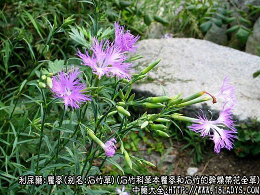
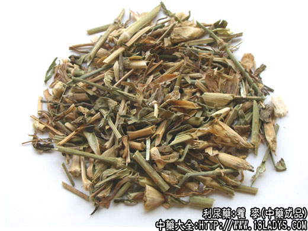
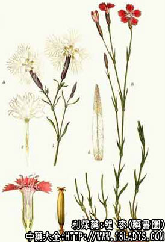

本品为少常用中药。《神农本草经》列入草部中品。
别名：石竹草、巨麦、十样锦。
来源：为石竹科多年生草本植物瞿麦和石竹的干燥带花全草。多为栽培。
植物形态：多年生草本植物。茎丛生，直立。瞿麦高30～80厘米。石竹高30～50厘米。有节。多分枝。单叶对生，线状披针形，全缘，基部连合成鞘状，花顶生，单一或数朵簇生，花冠5瓣，有红、白、紫、杂等多种颜色，瞿麦花冠先端深裂成细丝状。石竹花冠先端星锯齿裂。蒴果长圆筒状，包于宿存萼筒内，成熟时顶端作4～5齿裂。内有黑色扁圆形种子多枚。
产地：全国各地均有栽培，也有野生。
性状鉴别：本品花期前割取地上全株晒干扎成把。晒干后的瞿麦呈黄绿色，其余同上。以黄绿色，无杂草，无根，花未开放者为佳。
主要成分：含皂甙。石竹花含芳香油，主要为丁香酚、苯乙醇等。
药理作用：1、利尿。其煎剂有显著利尿作用。
2、兴奋肠管，使肠蠕增加。
炮制：切咀，生用。
性味：苦寒。
归经：入心，小肠经。
功能：清热利尿，破血通经。
主治：淋病尿积压，经闭不通。
临床应用：最适宜于治热淋而有血尿者（如急性尿道炎、膀胱炎），常配赤芍、茅根、生地，方如瞿麦散。如果热症更盛，再加配栀子、滑石；对产后泌尿系感染而致的血淋，宜配蒲黄。
此外，瞿麦也治便秘，因其能使肠蠕动增加而促进排便，常配瓜萎仁。
用量：3～12g，大剂可用至18～24g。